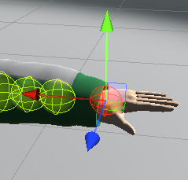

In order to prevent simulated objects from going through other parts of the character's model, you can add a SphereCollidersModifier component to the simulation.
Other collision shapes will be added in future versions, but feel free to make specific requests via any of the Contact methods listed on the Help page.
The SphereCollidersModifier component has an Edit button similar to the one in the FlexiMotion component which opens a window similar to the FlexiMotion Window.

There are a few notable differences between this window and the FlexiMotion Window:
- Each object can have multiple colliders, so when you include one it will add a new row for the collider.
- Whenever you select a collider row, it will show a gizmo in the scene view which you can use to move that collider's position (unlike the other window which directly selects the object on that line).
